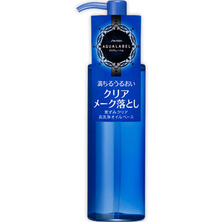

返回列表
产品名称：アクアレーベル ディープクリアオイルクレンジング

資生堂 アクアレーベル ディープクリアオイルクレンジング －
メーカー 資生堂
JANコード 4901872374359
商品の特徴
満ちるうるおい
黒ずみクリア
高洗浄オイルベース
- 成分・分量
- -
- 用法及び用量
- ＜使用方法＞
●ぬれた手でもお使いいただけますが、落ちにくいメークをしている場合は、乾いた手でのご使用をおすすめします。
●手のひらにポンプ3回押し分をとり、なじませた後、洗い流します。
●肌をこすりすぎないようにご注意ください。
【まつ毛エクステンションをお使いの方】
●目もとは、横にこすらないように、根元から毛先に向かって、やさしくなじませてください。まつ毛エクステンション時は、特に目もとをこすらないようにご使用ください。
●まつ毛エクステンションは、摩擦やまつ毛の生え変わり、ライフスタイルにより、自然にとれていきます。
●まつ毛エクステンション施術後、使い始める場合は施術店のご案内に従ってください。